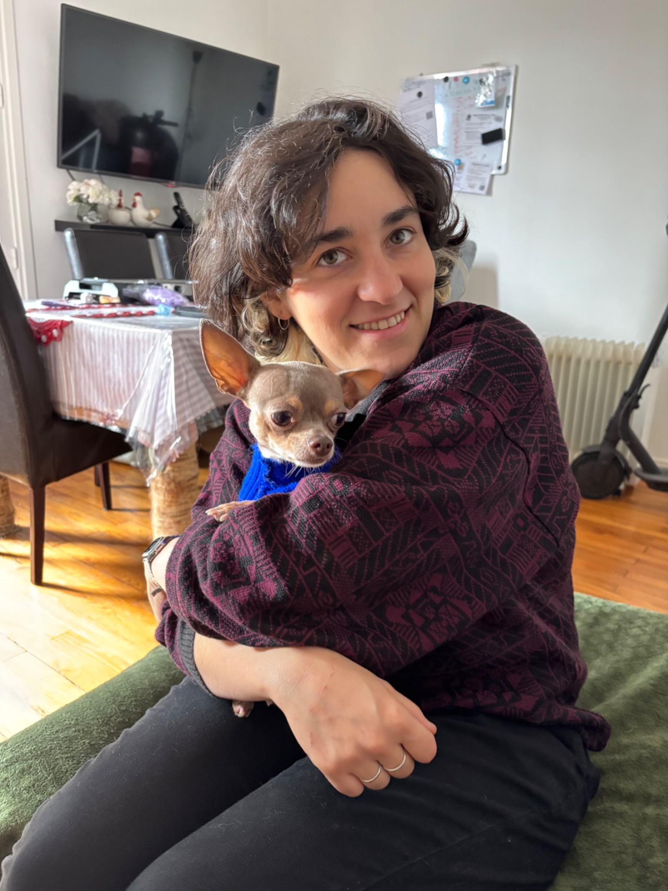

<!-- ===== POURQUOI MOI / À PROPOS ===== -->
<section class="why" id="about">
  <div class="container why-inner">
    <div class="why-text">
      <span class="section-tag">Pourquoi moi ?</span>
      <h2>Une vraie passionnée,<br/>pas juste une gardienne</h2>
      <p>Je suis brésilienne, installée à Grenoble, et j'ai un superpouvoir : comprendre vos animaux même quand ils font la tête.</p>
      <div class="why-items">
        <div class="why-item">
          <span>🎓</span>
          <div>
            <strong>6 ans d'expérience</strong>
            <p>Des dizaines de chats, chiens, chinchila et autres créatures adorables en mon compagnie.</p>
          </div>
        </div>
        <div class="why-item">
          <span>📸</span>
          <div>
            <strong>Rapports photos quotidiens</strong>
            <p>Vous partez en vacances, pas votre curiosité. Je vous envoie des photos de votre compagnon.</p>
          </div>
        </div>
        <div class="why-item">
          <span>🗣️</span>
          <div>
            <strong>3 langues : FR · PT · Miaou</strong>
            <p>Je négocie aussi bien avec un chat récalcitrant qu'avec un propriétaire inquiet.</p>
          </div>
        </div>
        <div class="why-item">
          <span>💚</span>
          <div>
            <strong>Patience infinie</strong>
            <p>Les animaux timides, stressés ou avec du caractère ? Ma spécialité.</p>
          </div>
        </div>
      </div>
    </div>
    <div class="why-visual">
      <div class="photo-frame">
        <div class="photo-placeholder">
          <!-- <span>📷</span> -->
          <!-- <p>Votre photo ici !</p> -->
           
        </div>
        <div class="floating-badge b1">🐶 Fan de chiens</div>
        <div class="floating-badge b2">🇧🇷 Brésilienne</div>
        <div class="floating-badge b3">⛰️ Grenoble</div>
      </div>
    </div>
  </div>
</section>